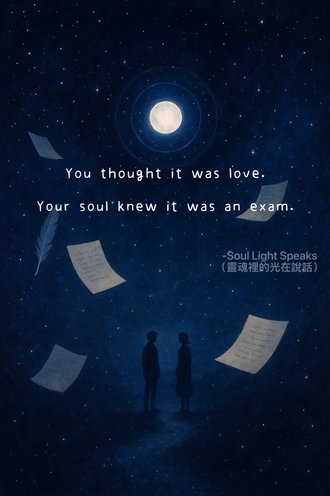
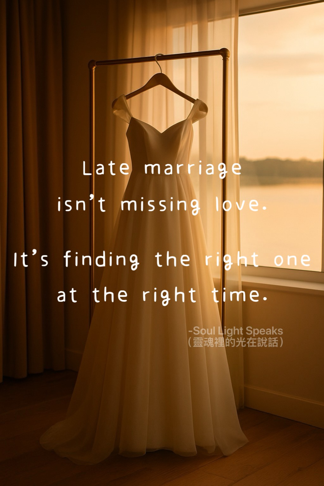
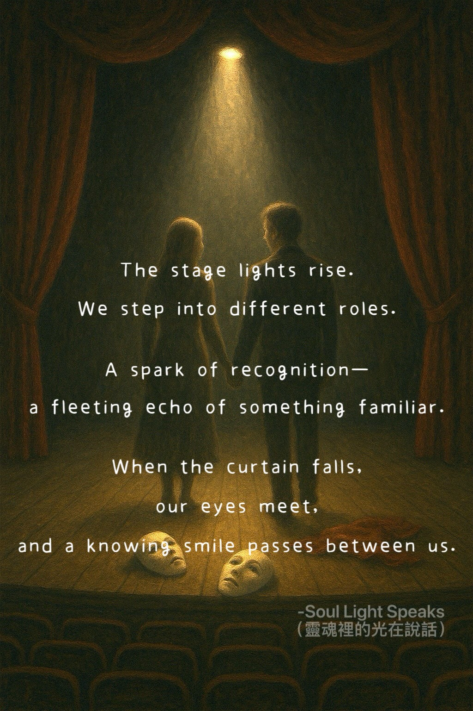

🔹Meeting & Letting Go

Through the years,
we’ve quietly said goodbye
to many souls for the last time.
Meeting fully,
even for a moment,
is already a blessing.
If fate allows,
we will meet again.

In the passing crowd,
our eyes met.
We smiled,
a small wave.
And just like that,
we were gone again—
lost in the crowd.

Some stay for a night—
yet are never forgotten.
Some stay a lifetime,
yet never truly grow close.
We have all,
at some point,
been travelers
in each other’s lives.

That encounter
was never meant to stay—
only to light
a part of your path.
That light
belongs to the night,
and to memory.
That quiet, unreachable glow
never truly fades.
🔹Love & Lessons

You thought it was love.Your soul knew it was an exam.

Love teaches lessons—
sometimes while together,
sometimes after loss.
No matter when,
your lesson is complete.

Late marriage isn’t missing love.
It’s finding the right one
at the right time.

The stage lights rise.
We step into different roles.
A spark of recognition—
a fleeting echo of something familiar.
When the curtain falls,
our eyes meet,
and a knowing smile passes between us.